未屿AIStudio
交付有竞争力的
时间序列预测能力。
从电价、价差、负荷出发，把行业算法积累变成客户可接手、可扩展、可持续运营的业务能力。
在 2025、2026 年多个电力交易 PK 中排名前列。
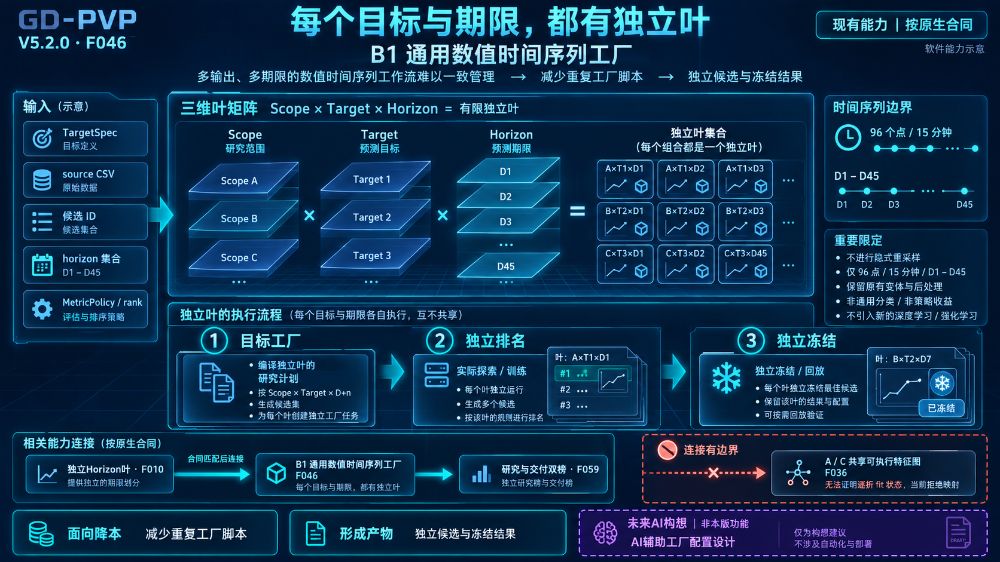
点击放大完整原图 F046预测产物同场 PK，成熟任务交给运营。
业务表现由团队披露，说明见第 19 页。
业务咨询：weiyuaistudio@outlook.com ↗
未屿AIStudio · GitHub ↗01 / 我们能做什么
先看预测结果，值不值得进入你的业务。
GD-PVP 的核心产物，是可以参与行业竞争的时间序列预测方案，以及让客户持续使用它的工程能力。
2025、2026 年
多个电力交易 PK 中排名前列团队业务验证披露 · 项目细节不公开
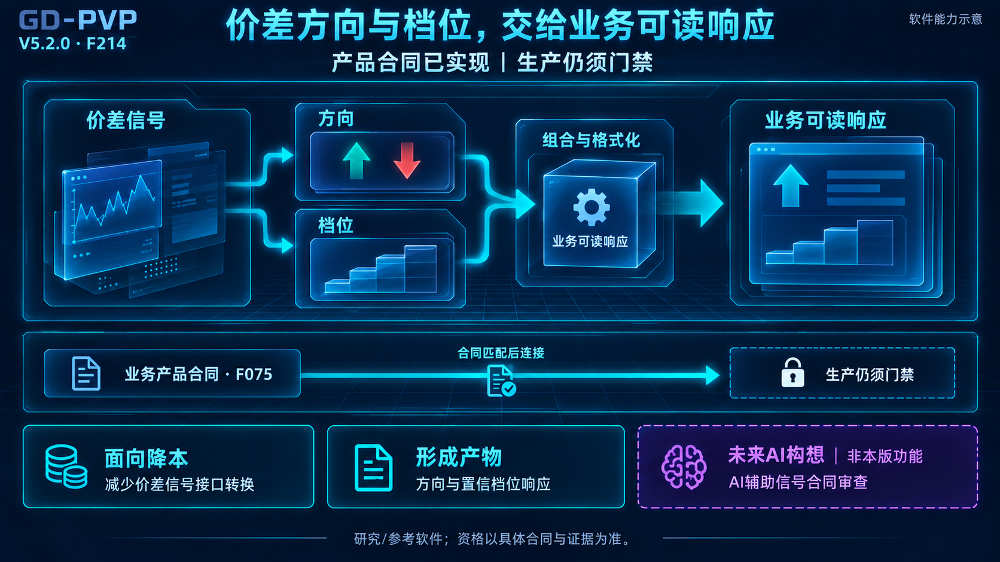
点击放大完整原图 F214买回去，要能产出结果、接手运行，并继续创造业务价值。
本册采用团队可公开披露的业务反馈；图示不代表具体项目成绩。
02 / 我们解决什么
把反复消耗研发资源的四件事交给系统。
客户最难的部分，是持续做出可用结果，并让下一项任务、下一位同事继续做下去。
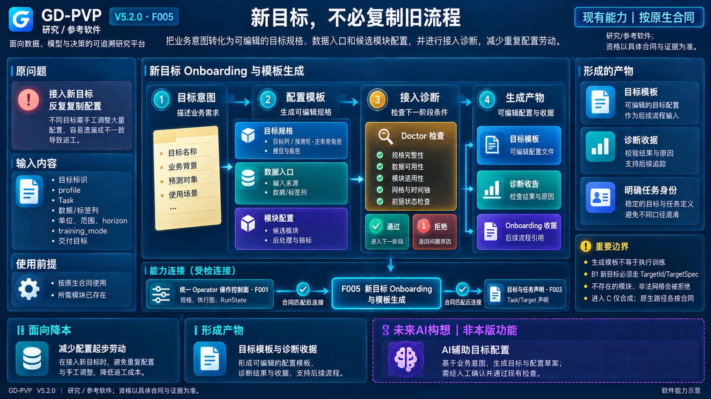
点击放大完整原图 F005有数据，难形成行业结果
领域特征与业务规则已有实现起点。
少从头开发一遍行业逻辑。
试验很多，研究组织靠人
配置组合、批量执行与比较统一组织。
把精力放在选对方案上。
一个目标能做，复制很重
按目标与期限组织独立任务。
扩展任务时复用已有方法。
交付之后，仍然离不开原作者
组件、状态与改进记录可交接。
成熟任务逐步转为运营。
把持续重复开发，转为初次适配、任务运营与必要的能力扩展。
02 / 你真正买到的产物
时序预测产物，可以与任何厂家同场 PK。
把 GD-PVP 与客户指定厂家的方案放进同一业务任务，用统一规则评价，按结果选择。
同一业务目标 · 同等可用信息 · 同一评价周期 · 同一指标
选中一项有竞争力的方案，还能把持续产出它的能力接到自己团队。
“任何厂家”指可纳入同任务比较，不承诺所有任务均领先；比较方式为示意。
03 / 看能力怎样形成
多个目标、多个期限，一套研究生产方式。
按范围、目标与期限组织任务，各自形成候选、排名与交付状态。
点击放大完整原图 F046- 范围 × 目标 × 期限组成任务矩阵
- 各单元独立研究与选择
- 结果和状态按任务保留
客户得到：能够扩展研究范围的任务组织方式。
图为阶段架构资料；当前真实业务验证进展见第 19 页。
03 / 看能力怎样形成
把行业经验，变成可复用的特征生产。
专家定义业务口径与配方，系统编译特征、依赖和来源记录。
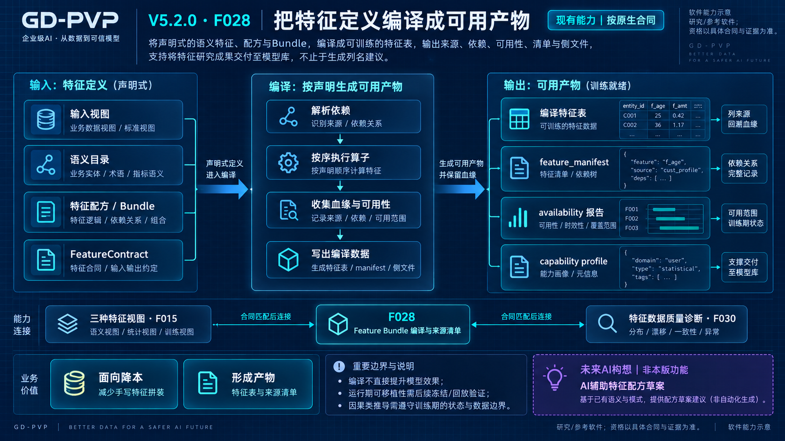
点击放大完整原图 F028- 配方表达已有业务逻辑
- 算子按依赖生成特征
- 训练产物带来源与可用性资料
客户得到：已有特征逻辑可以重复使用，减少逐项目手写。
配方与算子需已支持；新逻辑通过研发扩展。
03 / 看能力怎样形成
竞争力，需要进入行业细节。
价格场景中的历史结构、调整规则和触发条件，成为预测方案的一部分。
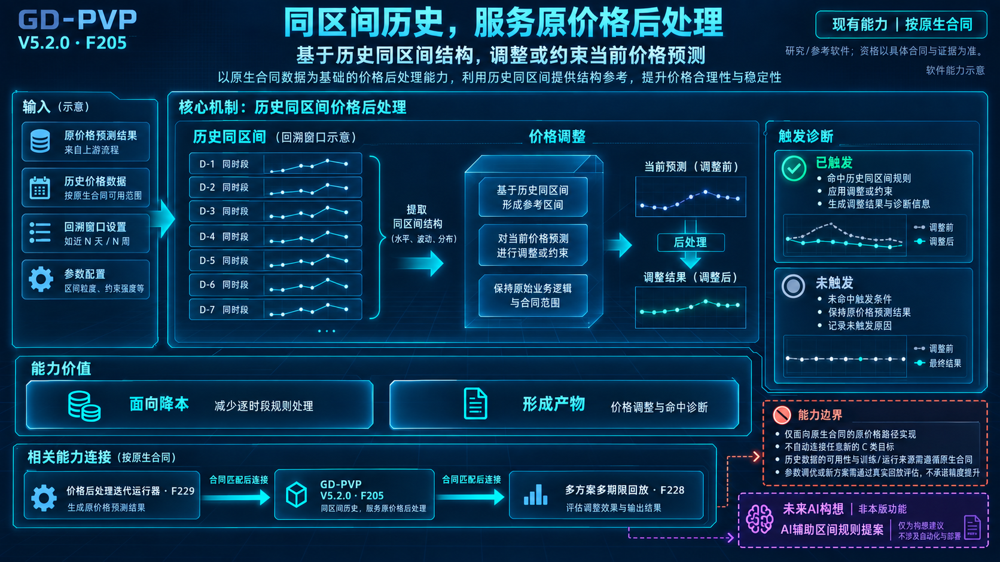
点击放大完整原图 F205- 历史同区间提供结构参考
- 价格规则按配置作用于结果
- 触发诊断进入回放比较
客户得到：从通用模型到价格业务之间，已有可复用实现。
原图解释规则机制；具体效果用客户任务的真实回放评价。
03 / 看能力怎样形成
把研究人员的时间，用在选择更好的方案。
模型、特征与后处理探索形成任务清单，按资源约束执行并汇总结果。
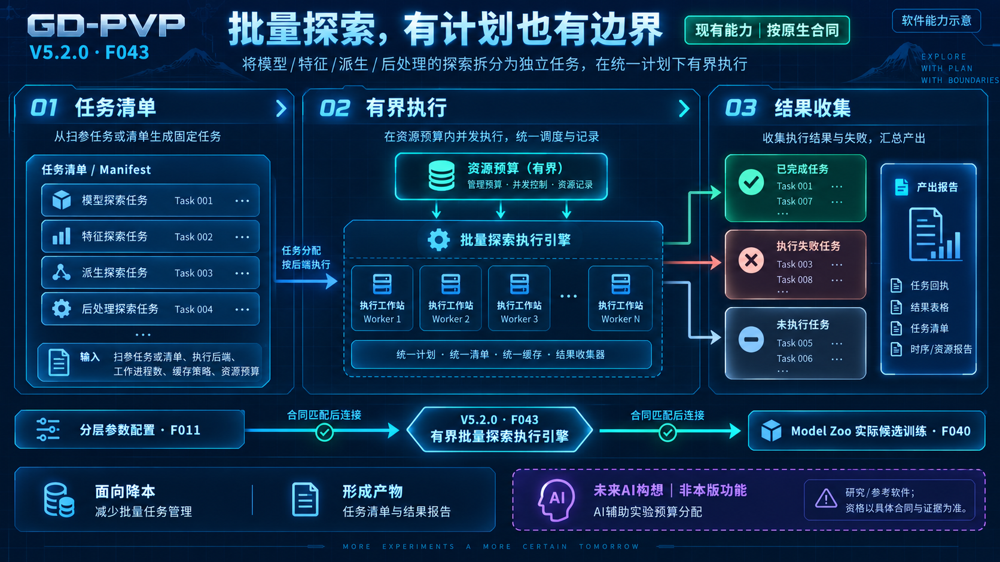
点击放大完整原图 F043- 先确定任务与范围
- 按资源约束组织执行
- 完成、失败与未完成分别留存
客户得到：批量组织试验、收集结果与定位失败的能力。
03 / 看能力怎样形成
用连续窗口，检验方案能不能持续竞争。
按时间窗口重复训练、预测与评价，在一致口径下比较方案。
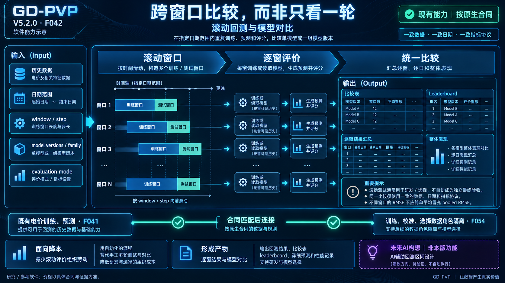
点击放大完整原图 F042- 窗口按既定规则移动
- 各窗真实执行并评价
- 汇总结果用于研究与选择
客户得到：跨窗口的比较依据，减少只凭某一轮分数选型。
研究选优与最终验收分别约定；图中分数为示意。
03 / 看能力怎样形成
每个期限的改善与退化，都看得见。
在共同基线上比较多个方案，保留各期限的改善与退化。
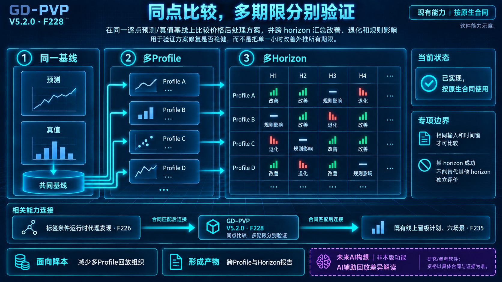
点击放大完整原图 F228- 相同基线组织方案比较
- 逐期限呈现变化
- 改善与退化同时保留
客户得到：按实际业务关注的期限，判断一项改进是否值得采用。
图为比较机制示意，不是本册公布的多厂家 PK 成绩。
03 / 看能力怎样形成
把参评的能力，交给客户继续运行。
模型、特征状态、后处理和依赖一起冻结，让评价与运行对应同一组件。
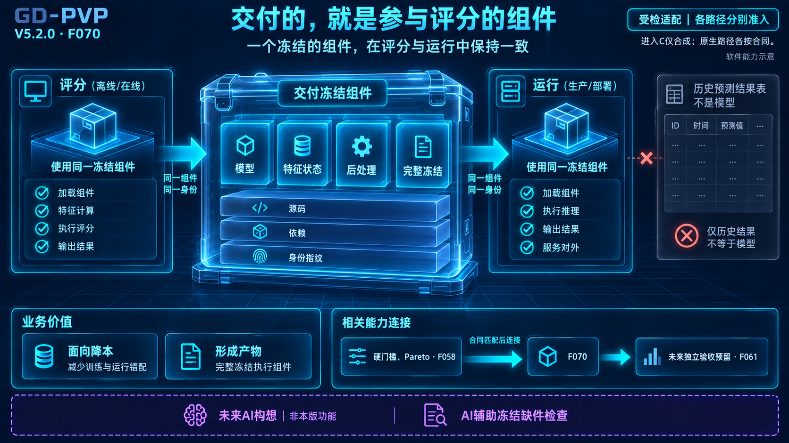
点击放大完整原图 F070- 参评与运行核对同一组件
- 特征状态和后处理跟随交付
- 按约定环境从输入验证输出
客户得到：有身份、有依赖、可在约定环境验收的运行组件。
图中历史范围标记见第 19 页说明；源码、部署和使用权按采购约定。
03 / 看能力怎样形成
让成熟任务，由运营人员接手。
请求、执行尝试、完成证明与结果分别记录，中断后有状态可查、有规则可循。
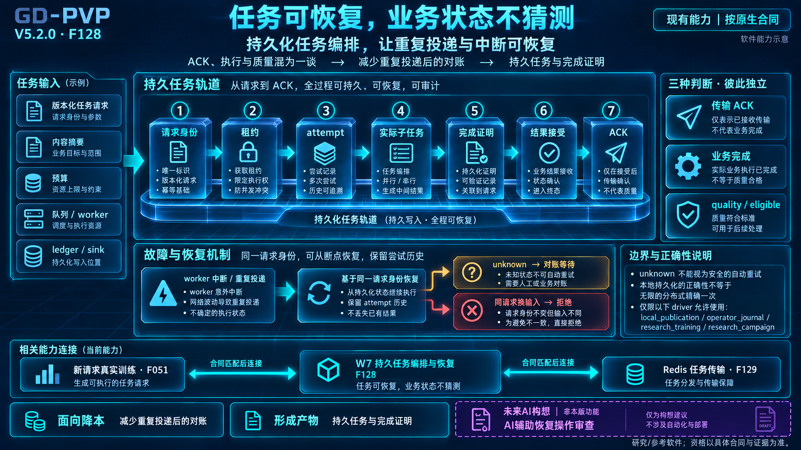
点击放大完整原图 F128- 任务身份与执行历史保留
- 中断后按记录恢复
- 异常状态按规则核对与升级
客户得到：围绕任务状态、输出和版本开展日常运营的基础。
未知状态需要对账；新算法和超范围问题仍由研发处理。
03 / 看能力怎样形成
把下一轮改进，接在上一轮积累上。
分析、候选配置、真实回放与停止条件组织成迭代过程，留下每轮结果。
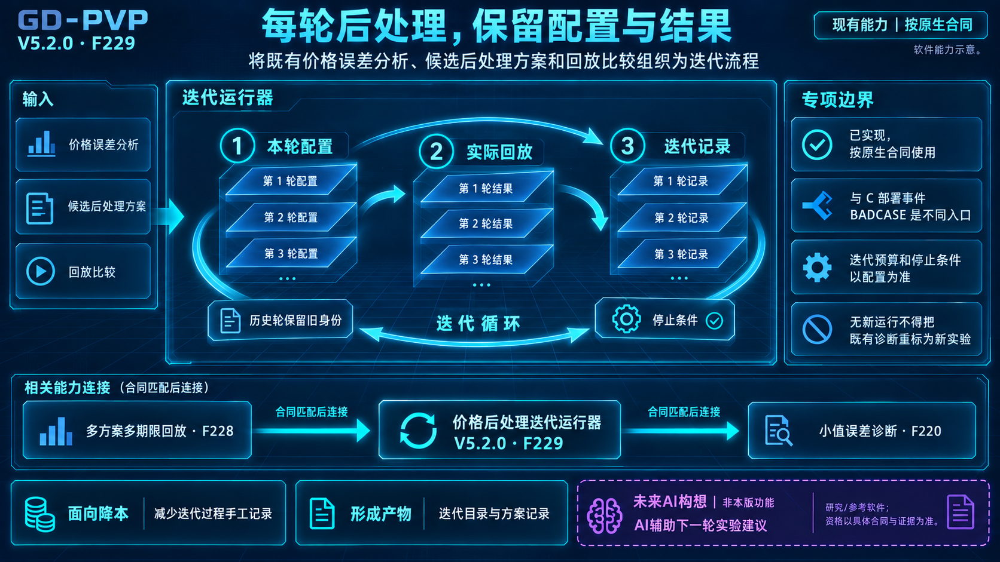
点击放大完整原图 F229- 每轮方案与配置有记录
- 真实回放检验改动
- 历史结果支持下一轮决策
客户得到：可以继续执行和复盘的改进流程。
人员审核方案与效果；图为既定流程的迭代机制。
04 / 与其他选择相比
选择一条路，把预测能力建进业务。
采购差异，最终落在谁负责产出结果、谁能接手能力、下一项任务还要投入多少研发。
小屏可左右滑动表格。
| 采购路径 | 客户要承担的关键工作 | GD-PVP 的购买理由 |
|---|
| 组建团队，从头自研 | 自行组织行业实现、试验、交付与维护。 | 继承已有算法工程，把新增研发用于业务差异。 |
| 采购通用数据 / ML 平台 | 通用能力之外，补齐本方领域方案和交付要求。 | 直接从领域方法、任务组织和运行组件开始。 |
| 采购行业厂家预测方案 | 核对预测竞争力，以及能拿到结果、服务还是组件。 | 同任务 PK，并按约定交付可接手运行的能力。 |
| 引入 GD-PVP | 完成本方数据适配、业务验收与运营交接。 | 有竞争力的预测产物 + 可复用工程 + 持续运营。 |
需要更强预测，也需要把能力接到自己团队：这是 GD-PVP 的目标客户。
各厂商交付方式不同，应以实际方案比较；可执行组件、源码与使用权分别约定。
04 / 具体产品与我们的差异
我们比通用平台多交付哪一层价值？
GD-PVP 聚焦行业任务的结果生产：已有领域实现、实验方法与运行交付一起使用。
小屏可左右滑动表格。
| 对比产品及公开能力 | 行业落地要完成的工作 | GD-PVP 已提供的行业起点 |
|---|
Databricks [S1]
AutoML、多序列预测、模型部署 | 将行业规则与业务响应接入建模流程，形成可交付方案。 | 领域特征、价格后处理与价差响应已有实现，减少从零编码。 |
Dataiku [S2]
时序特征、自动滞后选择、逐期模型 | 把逐目标、逐期限试验组织成可重复执行的行业任务。 | 任务模板、批量探索、滚动比较与组件交付，已有成套路径。 |
DataRobot [S3]
自动特征、模型试验与回测 | 按业务口径与时点约束，形成实际可比较的预测产物。 | 围绕电价、价差、负荷形成产物，可进入客户同场评价。 |
阿里云 PAI [S4]
可视化开发、训练与在线服务 | 在基础设施上建设领域算法、任务编排与日常运营。 | 领域方案与批量任务可复用，运行状态与恢复记录可查。 |
MLflow [S5]
模型来源、版本与生命周期管理 | 为版本化模型持续补充行业研究、业务验证与改进方法。 | 领域特征、期限评价、价格迭代一起承接，接续已有结果。 |
对比重点：同一个行业任务，已经替你完成了多少算法工程。
平台也可形成行业方案；比较实际交付组合。这些平台名称不是本册所述业务 PK 的参赛名单。
05 / 为什么值得付费
把我们走过的路，变成你的业务起点。
长期投入沉淀为算子、规则、组件和改进方法，客户可以在这些积累之上继续建设。
1000 亿+Token 累计研发投入 · 创始人披露
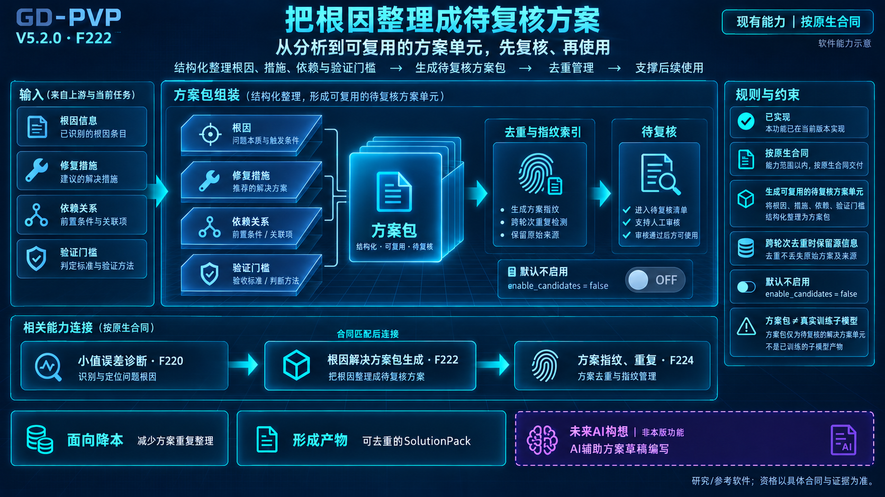
点击放大完整原图 F222付费的理由：获得有竞争力的能力起点，并把后续投入留给自己的业务。
Token 为创始人自述；本册不将其换算为客户收益、性能或开发工时。
05 / 用了以后能做到什么
你的团队，下一项任务这样做。
在完成适配与验收的范围内，重复算法工作由系统承接，人员围绕业务目标、结果和异常运营。
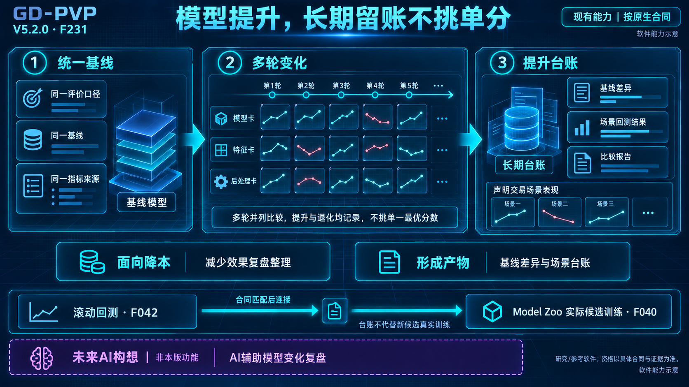
点击放大完整原图 F231成熟任务从“反复开发”转向“配置与运营”，研究成果留在组织里。
新增赛道、算子、模型与执行器仍需研发扩展；不等同于取消所有算法岗位。
06 / 如何开始合作
先用一个真实任务，决定是否值得采购。
把你正在使用的方案一起带来：比较预测结果，也比较交付之后谁能持续运行。
任务与方案配置
预测及评价资料
约定运行组件
运营交接资料
同场 PK
GD-PVP 与指定方案按约定共同评价。
让付费决定建立在两件事上：结果值得用，能力接得住。
试点与交付项目按双方约定执行；不在宣传册中预设报价、精度提升或节省比例。
06 / 资料与说明
业务验证与资料说明
业务验证说明、原图适用范围与竞品官方资料。更新日期：2026-10-17。
真实业务状态
据团队业务反馈，在 2025、2026 年多个电力交易 PK 中排名前列。项目细节不公开，本册不展示具体名次、参赛方、指标或业务数据；该表述不是独立第三方测评。
原图与本版更新
原图为 V5.2.0 阶段资料，用于解释工作机制。旧图中的研究范围标识不再作为当前产品的总体边界；业务状态采用上条最新说明，具体功能按当前交付版本验收。
竞争比较
第 14-15 页比较采购路径和交付组合，不声称对全部产品或所有任务全面领先。公开列举的平台未被指认为团队业务 PK 的对手。
投入与交付
1000 亿 Token 为创始人披露；可运营范围、源码、部署、修改与使用权依项目约定。图中曲线、界面与分数为能力示意。
S1 / Databricks
Forecasting with AutoML
自动选型与调参、多序列训练、注册与部署。
S2 / Dataiku
DSS 15 · Time Series Forecasting Settings
自动滞后选择、窗口特征与逐序列逐期限模型。
S3 / DataRobot
Time series forecasting walkthrough
自动特征、算法试验、回测与切片分析。
S4 / 阿里云 PAI
人工智能平台 PAI
开发、可视化建模、训练与在线服务。
S5 / MLflow
ML Model Registry
模型来源、版本、别名与生命周期管理。
未屿AIStudio
带上你的业务任务，
用同场结果决定合作。
给出目标、当前方案与验收标准。
看预测结果，也看你的团队能否接手。
点击放大完整原图 F070GD-PVP：有竞争力的预测产物，可持续运营的行业能力。
业务咨询：weiyuaistudio@outlook.com ↗
未屿AIStudio · GitHub ↗